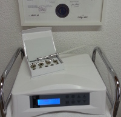
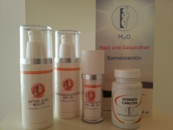
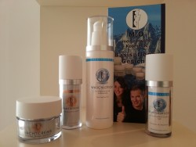
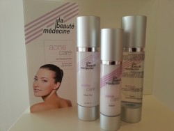
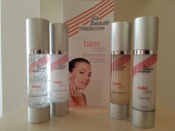

Meine Angebote
Gönnen Sie sich eine Auszeit und lassen Sie sich verwöhnen
Ich biete Ihnen eine Auszeit vom hektischen Alltag. Hier können Sie sich in Ruhe entspannen, während ich Sie verwöhne und pflege.
Beim ersten Kennenlernen haben für mich die individuelle Begutachtung des Hautbildes und die Wünsche der Kundin/des Kunden oberste Priorität.
Gesichts- und Körperbehandlungen
Jede Behandlungseinheit wird nach den momentanen Hautbedürfnissen erstellt und beinhaltet eine persönlich Zusammenstellung aus Reinigung, Enzympeeling, chemisches Peeling, warme Kompressen oder Dampf, Tiefenreinigung, Korrektur der Augenbrauen, Lymphdrainage, Gesichts-, Hals-, Dekolletémassage, Hals-/Ölwickel, Einarbeitung von Wirkstoffpräperaten und Gesichtsmasken.
| Reinigungsbehandlung Schüler |
(bis 19 Jahre) |
38 € |
| |
|
|
| Pflege mini |
45min |
45 € |
| Pflege klein |
60min |
59 € |
| Pflege intensiv |
80min |
72 € |
| Pflege groß |
100min |
95 € |
Microdermabrasion „Diamant“

Bei der Microdermabrasion „Diamant“ wird die Hornschicht der Haut mit einem speziellen Diamant-Schleifaufsatz sanft aber intensiv abgetragen. Mithilfe eines Vakuumsystems werden die abgestorbenen obersten Hornschüppchen abgesaugt.
Dies regt die Neubildung von Zellen an und die Mikrozirkulation der Haut wird erhöht. Die Aufnahme der danach aufgetragenen feuchtigkeitszuführenden Wirkstoffe wird stark erhöht.
Die Folge ist ein tiefengereinigtes mit Intensivwirkstoffen versorgtes strahlendes Hautbild.
Die Microdermabrasion ist in eine Pflegebehandlung eingebettet (ab 79 €).
NEU: Lymphdrainage für den Körper
Die Lymphflüssigkeit, die in einem netzartigen System durch unseren ganzen Körper fließt, hat eine wesentliche Auswirkung auf unser gesamtes Wohlbefinden.
Mit der Lymphdrainage nach Dr. Vodder, einer sehr sanften Druck- und Streichmassage, bringt man das Lymphsystem in Schwung. Es wird die Entstauung, Entschlackung und Reinigung des Körpers unterstützt, das Immunsystem gestärkt und eine Tiefenentspannung bewirkt.
Es können einzelne Körperregionen behandelt werden, aber auch in eine Pflegebehandlung mit eingeplant werden (z.B. Gesichtsbehandlung oder Rückenbehandlung).
Ich empfehle eine Kombination aus 2 Körperregionen:
| Beine/Bauch | entstauend, verdauungsfördernd |
| Rücken/Nacken | verspannungslösend, Hautbild klärend |
| Arme/Brust | befreiend, erleichternd |
| Rücken/Lende | entspannend, entstauend |
| Beine/Lende | entstauend, entschlackend |
Dauer: 50-60min
Preis: 56€
Neben den praktischen Anwendungen biete ich zudem professionelle Pflegeberatung.
Ich arbeite mit der in Österreich hergestellten Wirkstoffkosmetik la beauté médecine und der dermatologischen Hautpflegeserie MvO-Kosmetik.



